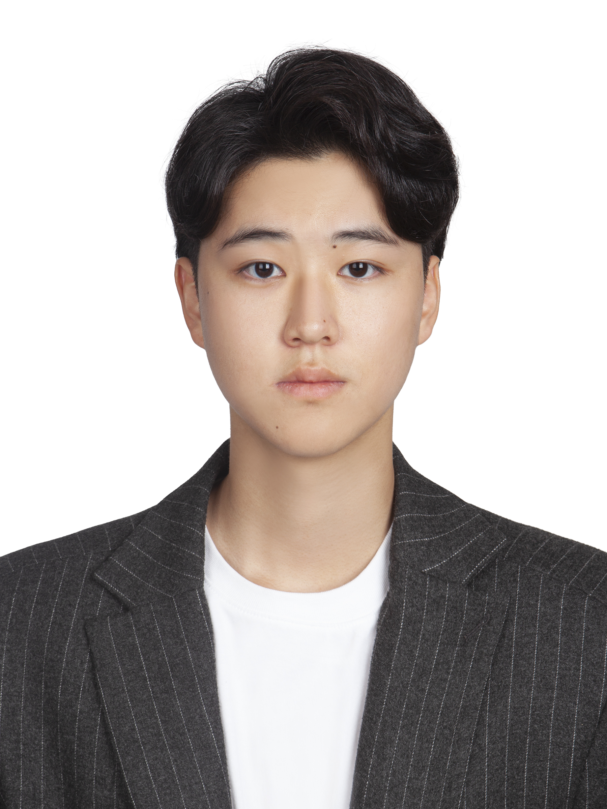
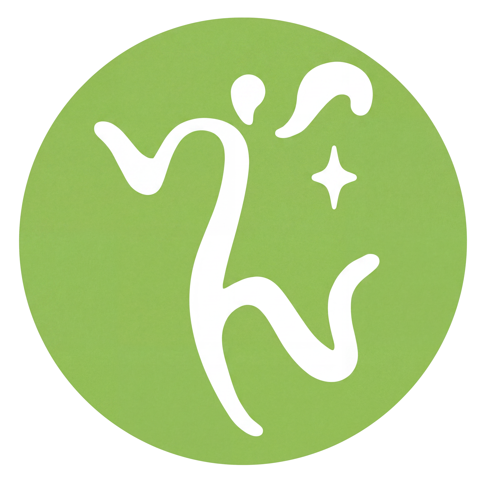
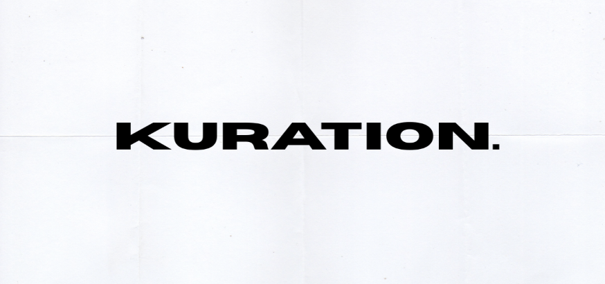
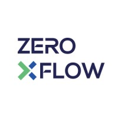

HYUNSOO
AHN
안현수

12th DB GAPS
Simulated Investment Competition
Led a top-down asset allocation strategy utilizing domestic ETFs as team leader, achieving a top 5% finish (ranked 50th out of 933 teams). Authored monthly portfolio management reports evaluating key macroeconomic drivers, including interest rate trends, fixed-income markets, and geopolitical risk premiums stemming from conflicts and political instability. Dynamically rebalanced asset weights across sector, commodity, short-term bond, and rate-linked ETFs to navigate market volatility, successfully hedging downside risk and optimizing risk-adjusted returns.
팀장으로 참가하여 국내 ETF를 활용한 탑다운 자산 배분 전략을 총괄하며 전국 933개 팀 중 상위 5%(50위)의 성과를 거두었습니다. 매달 운용보고서를 작성하며 글로벌 금리 방향성과 채권 시장, 전쟁 및 지정학적 리스크 프리미엄을 다각도로 리서치하고 포트폴리오에 반영했습니다. 거시경제 변동성에 대응해 국내외 섹터 ETF와 원자재, 초단기채 및 금리연계형 ETF 비중을 선제적으로 조절함으로써 하방 리스크를 철저히 방어하고 위험조정수익률을 최적화했습니다.
11th DB GAPS
Simulated Investment Competition
Developed a top-down macro investment strategy as the team leader while participating in an investment competition during military service. Analyzed how climate, political, and economic developments could ripple through global supply chains and industries to identify potential growth leaders. Inspired by the ripple-effect framework from *If It’s Raining in Brazil, Buy Starbucks*, traced how macroeconomic events could translate into changes in commodities, supply chains, and corporate earnings, using these linkages to formulate investment theses and identify attractive opportunities.
팀장으로서 탑다운(Top-down) 방식의 거시적 투자 전략을 설계했습니다. 군 복무 중에도 투자대회에 참가하여 기후, 정치, 경제적 이슈가 글로벌 공급망과 산업별 수요에 미치는 파급 효과를 분석하고, 이를 바탕으로 투자 방향성을 수립했습니다. 특히 『브라질에 비가 내리면 스타벅스를 사라』에서 제시된 파생효과 이론에 착안하여 하나의 거시적 사건이 원자재, 공급망, 기업 실적 등으로 어떻게 연쇄적으로 이어지는지 추적했으며, 이러한 분석을 통해 시장의 구조적 변화에서 성장 주도주를 발굴하는 데 주력했습니다.
Native / Korean
TOEIC 930 · TOEFL iBT 108
HSK 6



Agents and
Workflows
OpenAI · AUG 2026
Applied AI
Foundations
OpenAI · AUG 2026
AI
Foundations
OpenAI · AUG 2026
HP Social Media
Marketing
HP LIFE · JUL 2021
MINI
MBA
IBMI · JUN 2021